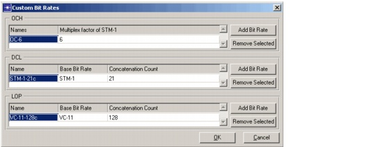

Creating a Baseline Scenario > Creating Network Traffic > Creating Custom Bit Rates
Creating Custom Bit Rates
You can create custom bit rates at the different layers of traffic (OCH, DCL, and LOP).
At the OCH layer, you can create new wavelength services. In case these wavelength services should support higher-layer (DCL) traffic, you should also specify the multiplex factor as the number of equivalent OC-1 (SONET) or STM-1 (SDH) units.
At the DCL and LOP layer, you can create so-called concatenated bit rates. You can use these bit rates to support data services in a more capacity-efficient way over SONET/SDH. For example, an STS-48 (2.5 Gb/s) circuit can support 1-Gigabit Ethernet service in the existing SONET hierarchy. However, this is inefficient because more than half of the capacity of the circuit is not used. Therefore, you might want to define a new concatenated bit rate of 21 STS-1 containers (21 x 50.112 Mb/s = 1.052 Gb/s) so that the capacity is used more efficiently and with finer granularity.
To define a new bit rate, choose Network > Custom Bit Rates. To create a new bit rate, click Add Bit Rate. For a new bit rate at the OCH layer, you must define a name and a multiplex factor (that is the amount of equivalent OC-1 or STM-1 units). For a new bit rate at the OCH layer, you must define a name, base bit rate, and concatenation count (that is, the scaling factor applied to the base rate).
If you define a custom OCH bit rate with a name such as "OC-X" (SONET) or "STM-X" (SDH), SP Guru Transport Planner sets the multiplex factor to X automatically.
If you define a concatenated bit rate with a name using the conventional naming scheme (<standard_base_bit_rate>-<concatenation_count>-<c_or_vc>), such as "STS-X-Yc", SP Guru Transport Planner sets the base bit rate to STS-X, and the concatenation count to Y automatically.
After you define a set of custom bit rates, you can use them as you use any other bit rate: you can define traffic with this bit rate and route it in the network. You can also save the defined set of custom bit rates in the user settings to reuse them again in other projects (for more information, see Importing and Exporting User Data Settings).
Figure 3-22 Concatenated Bit Rates Dialog Box

| Home © 1987-2007 OPNET Technologies, Inc. All Rights Reserved. This software may be covered by one or more U.S. Patents. See complete patent notice in the Legal Notices section. OPNET Support Center |